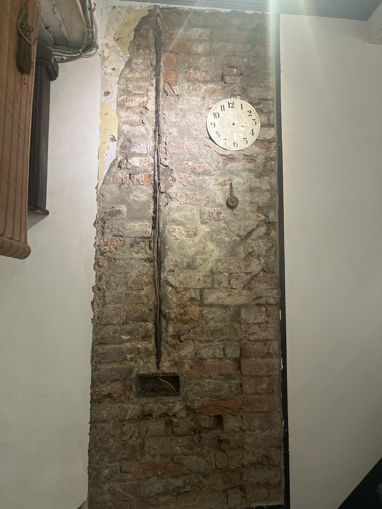
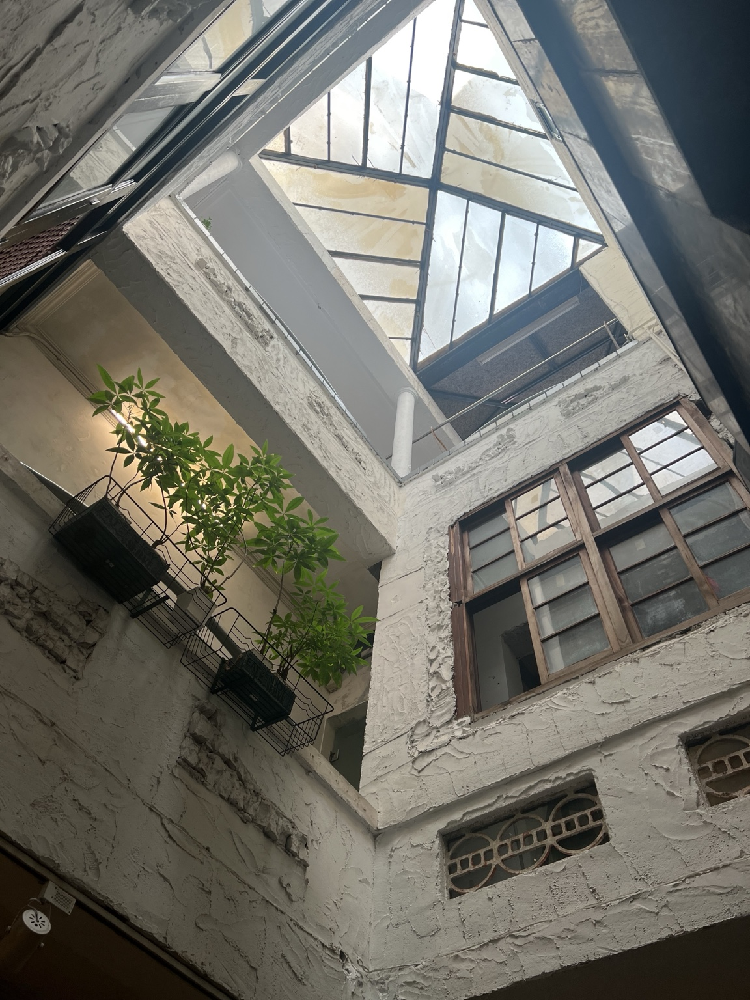
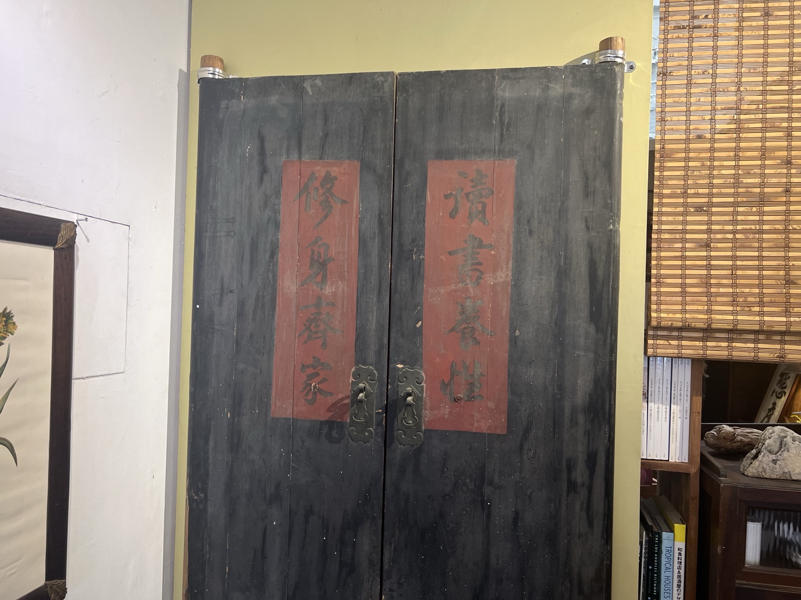
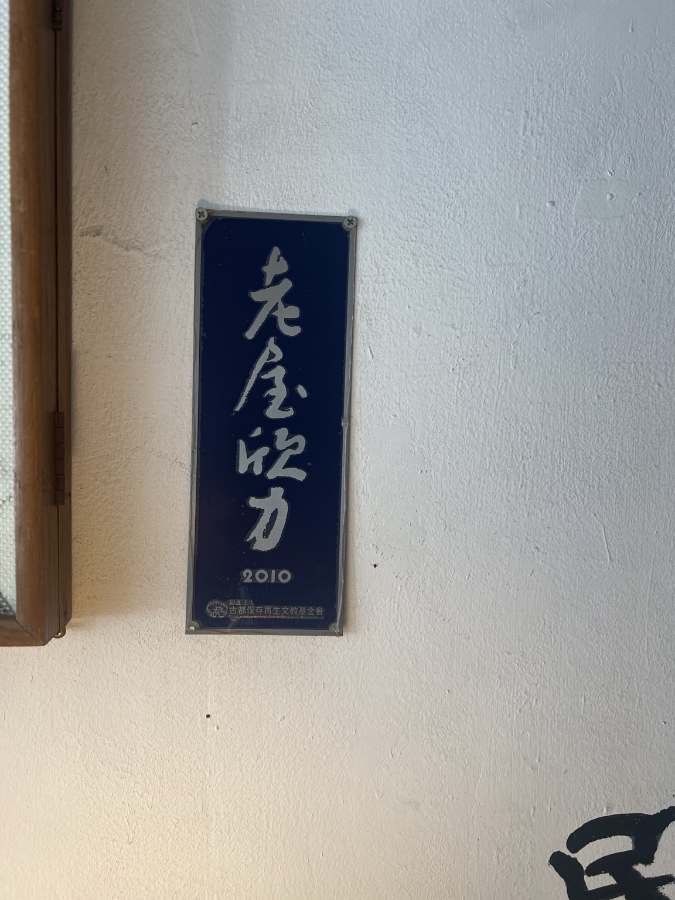

2010
老屋欣力賞
古都基金會認證優質老屋活化案例，連晟讓旅行社成為文化傳承的空間。
連晟位於民權路二段的老街屋，建於1953年，延續日治長條街屋型式。紅磚牆、天井、木窗與老物件，保存著府城生活的時間感。2010年獲古都基金會老屋欣力賞。

這棟三層樓的長條街屋，第一、二進之間有一座明亮天井。前身是畫廊，2008年連晟遷入後，將一樓前半規劃為展覽與接待空間，竹簾後方才是辦公室，讓老屋不只是旅行社，更像一座府城文化客廳。
民權路自清朝即是商業繁榮的街道，老屋所在的街區緊鄰全美戲院——外牆上「臺南府城文化」的書法題字，正是出自戲院手繪電影看板大師顏振發之手。
連晟曾獲臺南市歷史街區振興補助，進行天井採光罩更新、立面洗石子與木窗修復，總投入近70萬元，讓老屋的風華得以延續。

保留老屋，也保留台南的日常語言。
古都基金會認證優質老屋活化案例，連晟讓旅行社成為文化傳承的空間。

外牆「臺南府城文化」由全美戲院國寶級手繪看板大師顏振發親筆題寫。

103、105年度獲臺南市歷史街區振興補助，修復天井、立面與木窗。
場域可作為集合、導覽開場與文化交流起點。